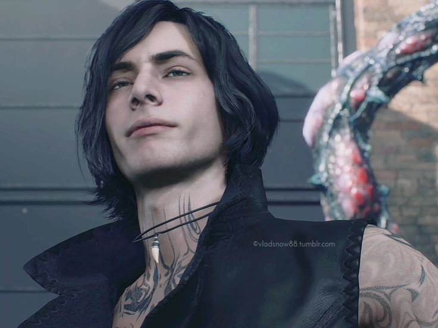
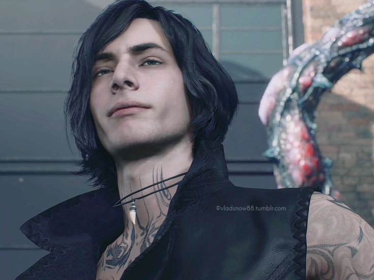

Lady é uma Caçadora de Demônios humana que apareceu pela primeira vez em Devil May Cry 3:
Dante's Awakening como personagem secundária e chefe. Ela é filha de Arkham e buscava caçá-lo,
encontrando Dante no processo, [ 3 ] e eventualmente se tornando sua parceira.
Lady também aparece como personagem jogável e personagem secundária em Devil May Cry 4:
Special Edition e aparece novamente como personagem secundária em Devil May Cry 5.
Trish conhecida como A Encantadora Infernal (The Bewitching Devil, 麗しき悪魔, Uruhashiki Akuma)
é uma demônio criada por Mundus que estranhamente se parece com a mãe de Dante, Eva.
Após sua derrota pelas mãos de Dante, ela mais tarde se juntou a Devil May Cry e se tornou uma caçadora de demônios ao lado dele.
Durante sua passagem pela Ordem da Espada, ela estava disfarçada de "Gloria".
Ela é uma personagem principal da série, embora originalmente tenha começado como uma das inimigas de Dante.
Trish aparece como personagem jogável em Devil May Cry 2 e Devil May Cry 4: Special Edition,
ela também está presente em Devil May Cry, Devil May Cry 4 e Devil May Cry 5,
e também na série de Anime.
Vergil é o irmão gêmeo mais velho de Dante e um dos principais antagonistas da franquia Devil May Cry.
Após a morte de sua mãe quando crianças, Vergil e Dante seguiram caminhos separados.
Vergil rejeitou sua humanidade e abraçou sua herança demoníaca,
enquanto seu irmão mais novo abraçou a humanidade e inicialmente rejeitou o demoníaco.
Estoico e reservado, Vergil demonstra uma disposição para tudo em sua busca para obter o poder de seu pai, Sparda .
Nero é o deuteragonista da franquia Devil May Cry. Ele apareceu pela primeira vez como personagem jogável em Devil May Cry 4 e,
posteriormente, em Devil May Cry 5. Criado em Fortuna , serviu como Cavaleiro Sagrado na Ordem da Espada,
um grupo religioso que venera Sparda e luta para proteger o mundo dos demônios. Mais tarde, é revelado que ele é filho de Vergil,
sobrinho do lendário Caçador de Demônios Dante e neto do lendário Cavaleiro das Trevas Sparda.
V é um dos principais protagonistas e o terceiro personagem jogável introduzido em Devil May Cry 5.
Um humano com ligações demoníacas, V se apresenta como o novo cliente de Dante para colocá-lo no rastro de Urizen e leva Nero como garantia.
Mais tarde é revelado que V é, na verdade, a metade humana de Vergil.
O Filho de Sparda (スパーダの息子 Supāda no Musuko,
The Son of Sparda) e O Lendário Caçador Demoníaco
(伝説のデビルハンター Densetsu no Debiru Hantā, The
Legendary Devil Hunter), é um dos principais protagonistas
da franquia Devil May Cry e o principal personagem jogável da maioria dos jogos da série.
Ele é o segundo filho do demônio Sparda e da humana Eva,
o irmão gêmeo mais novo de Vergil e tio de Nero. Dante é um mercenário paranormal,
investigador particular e vigilante Caçador de Demônios dedicado a exterminar demônios malignos e outras forças sobrenaturais malévolas;
uma missão que ele segue em busca daqueles que mataram sua mãe e corromperam seu irmão.


 
